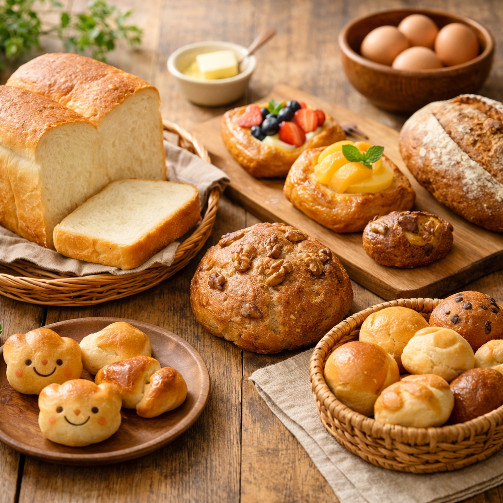
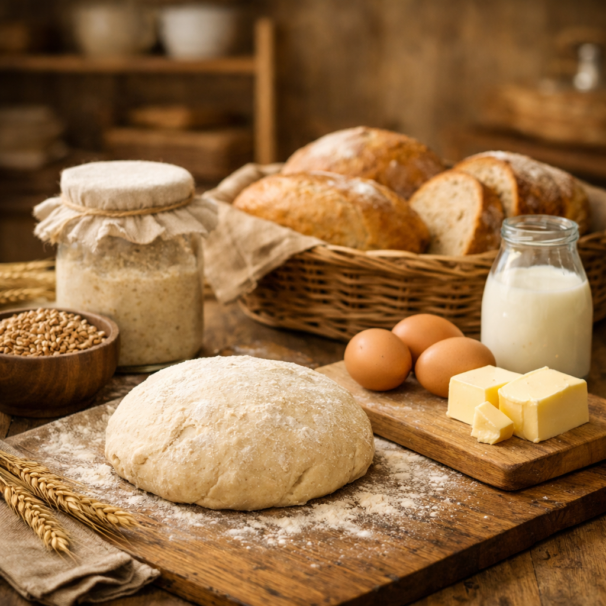
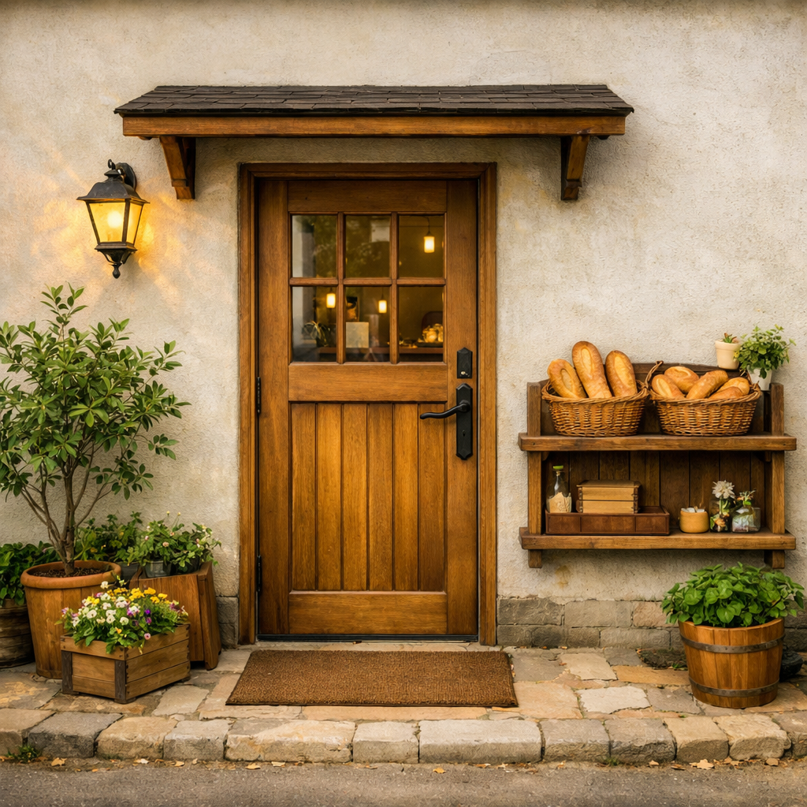

毎日食べたい、やさしいパン。
国産小麦と自家製酵母で焼き上げる、からだにやさしい日々のパン。
小さなお子さまにも安心して食べていただけるよう、余計なものは入れずに焼いています。

こだわり

こもれびベーカリーのパンは、国産小麦と自家製酵母を使い、ゆっくり時間をかけて発酵させています。
余計な添加物は使わず、素材そのもののおいしさを引き出すことを大切にしています。
毎日の食卓に並ぶパンだからこそ、「また明日も食べたい」と思っていただけるような、
やさしい味わいを目指しています。
店舗案内

木の扉が目印の、小さなベーカリーです。店内には白い壁と木の棚にパンが並び、
2〜3席のイートインスペースもご用意しています。
営業時間：10:00〜18:00（売り切れ次第終了）
定休日：火曜日
電話：000-0000-0000
※食パンの取り置きは、お電話または店頭にて承っております。